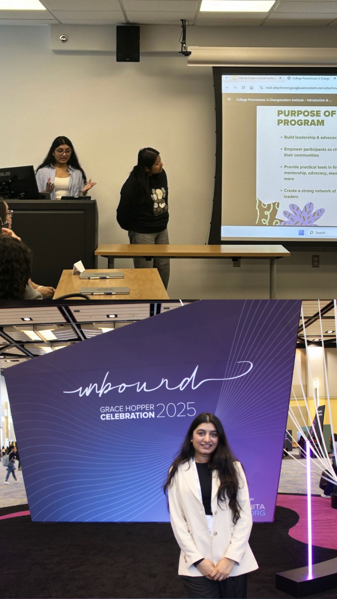

// My Story
How it all started.
I started with Finance drawn to the logic of numbers, the discipline of accounting, and the way data can tell a story about an entire organisation. But it was during my HR Analytics Co-op at The Home Depot that I realised what I actually loved: mapping how a process really works, working with stakeholders to define the right questions, and then building the documentation and analysis that answers them.
That insight led me to pivot from HR Management at Thompson Rivers University into an MBA in Business Analytics at Saint Peter's University, where I'm currently maintaining a 3.9 GPA, serving as President of the Data Science Club, and applying everything I learn directly to Supply Chain & Operations work.
At Saint Peter's and at Mahalaxmi Enterprises, I've documented current-state and future-state processes, built process maps and SOPs, gathered business and functional requirements, supported UAT, and used Python and the Claude API to automate reporting — cutting cycle time by 40%. I don't just write reports; I build the path to improvement.
If you're looking for a Supply Chain & Operations Business Analyst who can run the full cycle — from process documentation to requirements to go-live — you've found the right person.